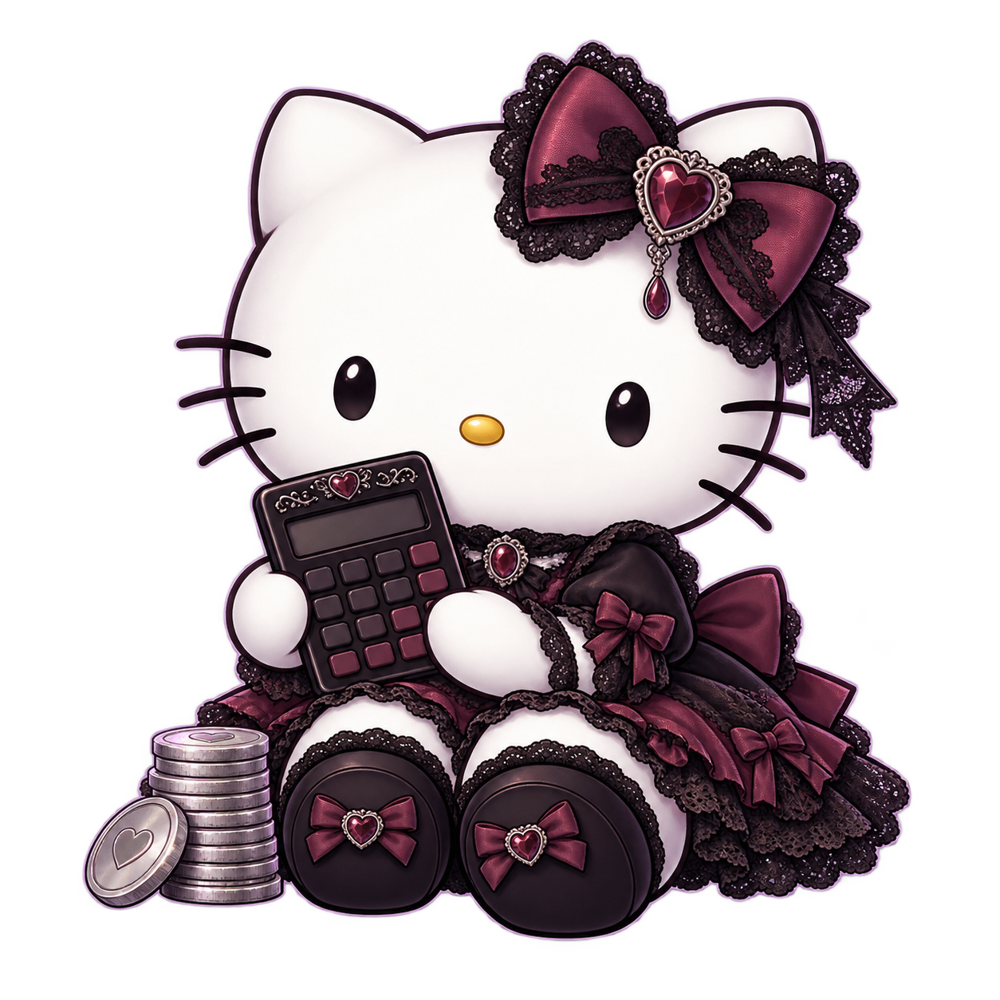
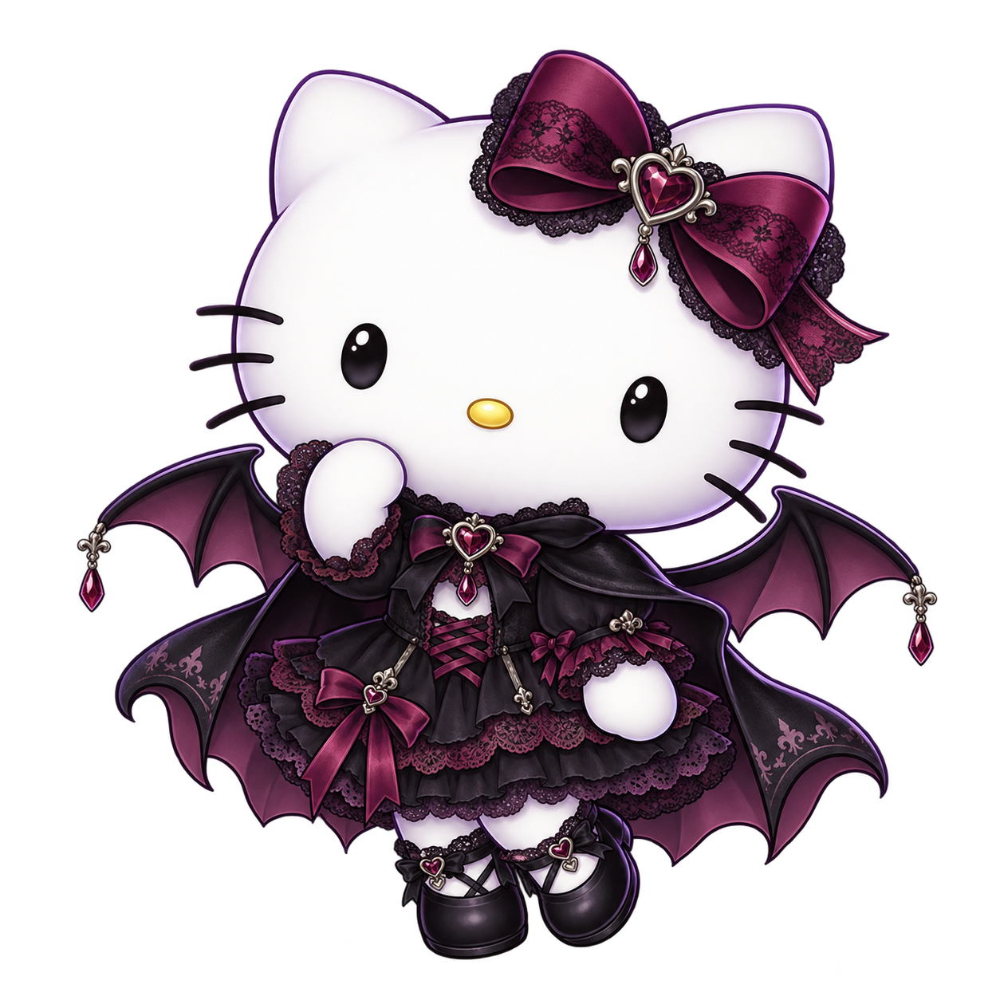

BINE AI VENIT ÎN TEORA
Un colț pentru
ideile tale.
Alege o unealtă. Fă un pas mic. Vezi mai clar.
un pic de magie, un pic de ordine ✧

Huse de brichetă
Cât te costă, cu cât vinzi și cât îți rămâne.
Deschide unealta
Mai multe unelte.
Același loc. Alte idei de pus în ordine.
Mica echipă goth8 ilustrații transparente ＋
Cabinetul 8-bit20 de micro-animații＋
Un mic atelier bântuit, dar prietenos. Toate sunt animate din sprite sheets transparente.
Testează un preț de vânzare
Bifează ce folosești. Restul poate rămâne oprit.
Spray-ul și lacul rămase se folosesc la următorul lot.
Calculul complet, dacă ai nevoie＋
Din fiecare vânzare
lei / husăToți banii din primul lot
De ce câștigul diferă de banii disponibili?
Plătești un recipient întreg, dar folosești doar o parte. Diferența rămâne în materiale pentru mai târziu.
HUSE DE BRICHETĂ / PASUL URMĂTOR
Cum crești?
Alegi patru lucruri. Îți arătăm ce se întâmplă.
BANII, ÎN PATRU PAȘI
Un ciclu pe rând.
Grafice, stocuri și toate cifrele＋
Banii tăi, în timp
Câte faci. Câte vinzi.
Următorul lot
Ce rămâne în atelier
Ciclu cu ciclu
| Ciclu | Estimat | Produse | Vândute | Stoc | Achiziții¹ | Venit | Câștig | Pentru tine | Bani rămași | Următorul lot² |
|---|
¹ Include transportul materialelor. ² Achizițiile țintei următoare, după folosirea stocului. * Lipsesc bani pentru ținta completă. Sume în RON.
FĂRĂ CUVINTE COMPLICATE
Pe scurt.
Deschide doar ce te interesează.
Cum calculezi câștigul?＋
Din vânzare scădem husa, bricheta și opțiunile bifate. Exemplu: 45 − (70 ÷ 9 + 6,50) = 30,72 lei câștig pe husă, înainte de opționale.
Cumpăr alt spray la fiecare lot?＋
Nu. Dacă ajunge pentru 30 de huse și faci 9, rămâne pentru încă 21. Alege „Îl am deja” și completează cât mai ai. Îl folosim înainte să cumpărăm altul. Costul părții folosite intră în câștig; banii se scad numai când cumperi. La fel cu lacul și husele rămase.
De ce câștigul diferă de banii din cont?＋
Ai plătit recipientul întreg, dar ai folosit doar o parte. Restul este în materialele din atelier. Produsele nevândute rămân și ele în stoc.
Ce înseamnă să reinvestesc 70%?＋
Din 100 lei câștigați, păstrezi 70 pentru atelier și pui 30 deoparte pentru tine. Banii materialelor vândute se întorc și ei în atelier. Nu retragi bani pe care nu îi ai.
Cum trimit calculul cuiva?＋
Apasă „Distribuie”, apoi copiază linkul sau trimite-l din telefon. Linkul păstrează toate prețurile și opțiunile din acel moment.
Ce nu include planul?＋
Taxele, timpul de lucru, rebuturile și retururile. Vânzările sunt o estimare. Un ciclu = un lot produs și pus la vânzare; tu alegi cât durează.
Cum verificăm că nu lipsește niciun leu?＋
Bani disponibili + stoc + bani pentru tine = bani de la început + materiale avute deja + câștig total.
Transportul materialelor se scade când îl plătești. Calculăm cu precizie completă; afișăm doi zecimali.